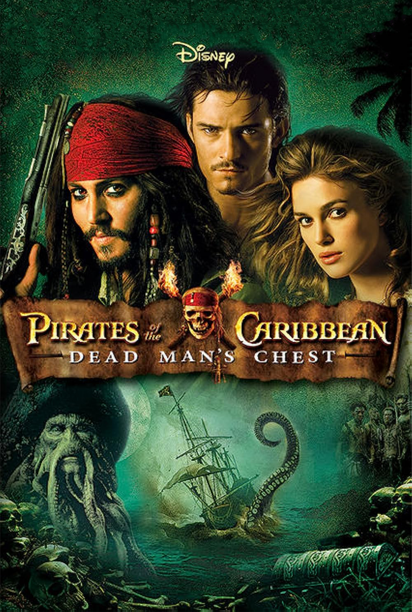
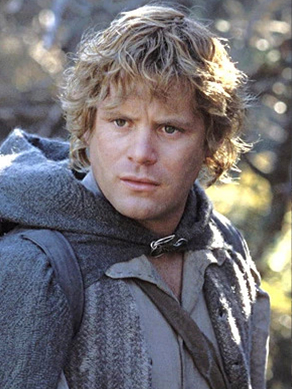
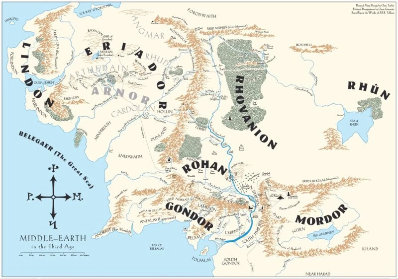
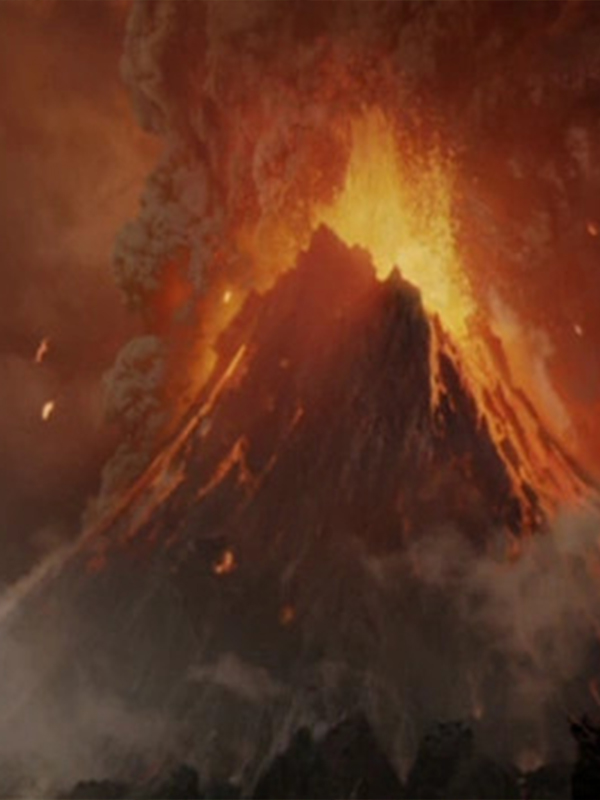

"Pirates of the Caribbean" is a beloved film series that combines swashbuckling adventure, supernatural elements, and memorable characters. The franchise, created by Walt Disney Pictures, consists of five films that follow the adventures of Captain Jack Sparrow and his companions in the treacherous waters of the Caribbean.
Directed by - Gore Verbinski (1–3), Rob Marshall (4), Espen Sandberg and Joachim Rønning (5)
Based on - Pirates of the Caribbean by Walt Disney, On Stranger Tides by Tim Powers (4)
Produced by - Jerry Bruckheimer
Distributed by - Walt Disney Studios Motion Pictures
Budget Total (5 films) - $1.274–1.364 billion
Box office Total (5 films) - $4.524 billion
Contents of this article(click to jump to the section)
Pirates of the Caribbean (2003): The Curse of the Black Pearl
"Pirates of the Caribbean (2003): The Curse of the Black Pearl" is an epic swashbuckling adventure film directed by Gore Verbinski and produced by Jerry Bruckheimer. It introduces us to the captivating world of pirates and the enigmatic Captain Jack Sparrow, played by Johnny Depp. The story follows the journey of Elizabeth Swann, portrayed by Keira Knightley, the governor's daughter, and Will Turner, played by Orlando Bloom, a blacksmith, as they get caught up in a thrilling quest involving a cursed pirate crew led by the villainous Captain Barbossa, portrayed by Geoffrey Rush.
The film is set in the Caribbean during the Golden Age of Piracy. It begins with the introduction of young Elizabeth, who possesses a mysterious gold medallion that is the key to breaking a terrible curse. When the medallion is taken from her, she enlists the help of Will, a skilled swordsman and secret admirer, to retrieve it.
Their journey leads them to Captain Jack Sparrow, a witty and eccentric pirate seeking to reclaim his stolen ship, the Black Pearl. Jack teams up with Will and Elizabeth, forming an unlikely alliance as they navigate treacherous waters, encounter supernatural forces, and engage in thrilling sword fights.
The Black Pearl and its cursed crew, doomed to remain undead under the moonlight, seek to break their curse by locating all the medallions. As Jack reveals his own connection to the cursed crew, he becomes embroiled in a high-stakes race against time.
Throughout the film, the audience is immersed in a world filled with swashbuckling action, unforgettable characters, and unexpected twists. The chemistry between Jack Sparrow, with his unique mannerisms and unconventional tactics, and the determined Will Turner creates a compelling dynamic, complemented by Elizabeth's strong-willed nature.
As the plot unfolds, alliances are tested, loyalties are questioned, and a thrilling battle ensues between the living and the undead. The film seamlessly weaves together elements of action, adventure, comedy, and romance, delivering an exhilarating cinematic experience.
"Pirates of the Caribbean: The Curse of the Black Pearl" was praised for its engaging storyline, stunning visual effects, and outstanding performances. Johnny Depp's portrayal of Captain Jack Sparrow, with his distinct voice and charismatic persona, garnered critical acclaim and earned him an Academy Award nomination for Best Actor. The film's success led to the creation of a beloved franchise, captivating audiences with its subsequent sequels.
Trailer
Pirates of the Caribbean (2006): Dead Man's Chest

"Pirates of the Caribbean: Dead Man's Chest" (2006) is the thrilling sequel to the blockbuster hit "The Curse of the Black Pearl." Directed by Gore Verbinski and produced by Jerry Bruckheimer, the film continues the swashbuckling adventures of Captain Jack Sparrow, played by Johnny Depp, and his companions in the treacherous waters of the Caribbean.
The story picks up where the first film left off, with Captain Jack Sparrow in debt to the supernatural Davy Jones, captain of the infamous Flying Dutchman. As the deadline for Jack's payment approaches, he finds himself in a race against time to retrieve the heart of Davy Jones, a powerful artifact that can control the destiny of its possessor.
Alongside Jack Sparrow, we reunite with familiar characters, including blacksmith Will Turner, played by Orlando Bloom, and Elizabeth Swann, portrayed by Keira Knightley. Will and Elizabeth are engaged to be married but face numerous obstacles, including the interference of Lord Cutler Beckett, a ruthless East India Trading Company official played by Tom Hollander.
To locate the heart of Davy Jones, Jack Sparrow, Will Turner, and Elizabeth Swann embark on a dangerous journey that takes them to exotic locations, facing perilous challenges and encountering mythical sea creatures. Their adventure leads them to the island of Tortuga, where they seek out the legendary pirate Captain Sao Feng, portrayed by Chow Yun-fat, in hopes of obtaining a navigational chart to find Davy Jones' hidden lair.
The film introduces new characters, such as Tia Dalma, a mysterious voodoo priestess played by Naomie Harris, and Bootstrap Bill Turner, Will's father and a member of Davy Jones' cursed crew, portrayed by Stellan Skarsgård. The relationships between the characters become more complex as alliances shift, trust is tested, and loyalties are questioned.
As the crew encounters Davy Jones and his eerie crew of half-human, half-sea creature beings, they face thrilling battles and high-stakes confrontations. The film showcases stunning visual effects, including the intricately designed Davy Jones, whose tentacled face and mournful appearance are brought to life through remarkable CGI.
"Pirates of the Caribbean: Dead Man's Chest" is filled with memorable moments, from the explosive and chaotic battle on Isla Cruces to the heart-pounding chase through a dense jungle. The film also introduces a thrilling new antagonist, the relentless and relentless Davy Jones, whose presence adds an ominous and eerie atmosphere to the story.
As the film reaches its climax, alliances crumble, secrets are revealed, and the characters must confront their darkest fears and make impossible choices. The narrative sets the stage for the next installment of the franchise, leaving audiences eagerly anticipating the resolution of the enthralling storylines.
With its breathtaking action sequences, witty dialogue, and captivating performances, "Pirates of the Caribbean: Dead Man's Chest" successfully builds upon the success of its predecessor while deepening the mythology of the Pirates universe. The film's gripping storytelling, intricate plot twists, and dynamic characters continue to enthrall audiences, ensuring its place as a beloved chapter in the epic pirate saga.
Trailer
Pirates of the Caribbean (2007): At World's End
The trilogy's magnificent ending, "The Return of the King" presents a truly epic and emotionally moving ending to the viewer.
Frodo
Frodo Baggins is the central protagonist of J.R.R. Tolkien's "The Lord of the Rings" trilogy. As a hobbit from the Shire, Frodo is unexpectedly chosen to carry the One Ring and embark on a perilous quest to destroy it. Frodo's journey is characterized by his courage, resilience, and the weight of his burden. Despite facing immense challenges and temptations, Frodo remains steadfast in his mission, demonstrating unwavering determination and self-sacrifice. His moral strength and compassion make him an iconic character, showcasing the power of individual courage in the face of overwhelming darkness. Frodo's story serves as a timeless reminder of the potential for heroism in the most unexpected of heroes.
and
Sam
 Samwise Gamgee, often referred to as Sam, is a loyal and steadfast hobbit from J.R.R. Tolkien's "The Lord of the Rings" trilogy. He serves as Frodo Baggins' faithful companion and gardener throughout their perilous journey to destroy the One Ring. Sam embodies unwavering loyalty, courage, and unwavering determination. Despite being a humble hobbit, Sam proves himself to be incredibly brave and resourceful, constantly providing support and encouragement to Frodo. He exemplifies the power of friendship, selflessness, and perseverance, playing an instrumental role in the quest to save
Middle-Earth
 Middle-earth is the fantastical setting of J.R.R. Tolkien's "The Lord of the Rings" trilogy. It is a vast and diverse world that encompasses continents, regions, and various races of beings. Middle-earth is rich in history, mythology, and captivating landscapes. From the peaceful Shire to the towering peaks of the Misty Mountains, and from the mystical forests of Lothlórien to the treacherous land of Mordor, Middle-earth is filled with both beauty and peril. It is a world where epic quests, battles between good and evil, and the enduring spirit of friendship and heroism unfold, leaving a lasting impact on readers and fans alike.
. Sam's unwavering devotion and humble heroism make him one of the most beloved characters in the trilogy.
advance toward the flames of
Mount Doom
 Mount Doom, also known as Orodruin, is a prominent volcanic peak located in the land of Mordor in J.R.R. Tolkien's "The Lord of the Rings" trilogy. It serves as a central and pivotal location in the story as the place where the One Ring was forged and must be destroyed. Mount Doom is characterized by its fiery and treacherous nature, with molten lava and a suffocating atmosphere. It represents the heart of Sauron's power and the ultimate test of Frodo's resolve as he and his companions undertake the perilous journey to destroy the Ring and save Middle-Earth from darkness.
while bearing the weight of the entire world as the forces of evil gather for their final attack.
The storylines from the previous movies are masterfully put together in this one. Character arcs are resolved, existing relationships are deepened, and new complexity levels are introduced. The future of
Middle-Earth
Middle-earth is the fantastical setting of J.R.R. Tolkien's "The Lord of the Rings" trilogy. It is a vast and diverse world that encompasses continents, regions, and various races of beings. Middle-earth is rich in history, mythology, and captivating landscapes. From the peaceful Shire to the towering peaks of the Misty Mountains, and from the mystical forests of Lothlórien to the treacherous land of Mordor, Middle-earth is filled with both beauty and peril. It is a world where epic quests, battles between good and evil, and the enduring spirit of friendship and heroism unfold, leaving a lasting impact on readers and fans alike.
is at risk, raising the stakes higher than ever.
The movie's ability to maintain balance in epic fights and personal character moments is one of its greatest strengths. The outstanding fight that takes place on several fronts known as the Battle of Pelennor Fields shows the combined strength of the
Middle-Earthian
Middle-earth is the fantastical setting of J.R.R. Tolkien's "The Lord of the Rings" trilogy. It is a vast and diverse world that encompasses continents, regions, and various races of beings. Middle-earth is rich in history, mythology, and captivating landscapes. From the peaceful Shire to the towering peaks of the Misty Mountains, and from the mystical forests of Lothlórien to the treacherous land of Mordor, Middle-earth is filled with both beauty and peril. It is a world where epic quests, battles between good and evil, and the enduring spirit of friendship and heroism unfold, leaving a lasting impact on readers and fans alike.
peoples. The battle's overwhelming emotional impact and visual spectacular showcase each character's bravery and selflessness, leaving a lasting memory in our hear.
"The Return of the King" also explores the internal struggles faced by its protagonists. The danger of
Frodo
Frodo Baggins is the central protagonist of J.R.R. Tolkien's "The Lord of the Rings" trilogy. As a hobbit from the Shire, Frodo is unexpectedly chosen to carry the One Ring and embark on a perilous quest to destroy it. Frodo's journey is characterized by his courage, resilience, and the weight of his burden. Despite facing immense challenges and temptations, Frodo remains steadfast in his mission, demonstrating unwavering determination and self-sacrifice. His moral strength and compassion make him an iconic character, showcasing the power of individual courage in the face of overwhelming darkness. Frodo's story serves as a timeless reminder of the potential for heroism in the most unexpected of heroes.
and
Sam
Samwise Gamgee, often referred to as Sam, is a loyal and steadfast hobbit from J.R.R. Tolkien's "The Lord of the Rings" trilogy. He serves as Frodo Baggins' faithful companion and gardener throughout their perilous journey to destroy the One Ring. Sam embodies unwavering loyalty, courage, and unwavering determination. Despite being a humble hobbit, Sam proves himself to be incredibly brave and resourceful, constantly providing support and encouragement to Frodo. He exemplifies the power of friendship, selflessness, and perseverance, playing an instrumental role in the quest to save Middle-Earth. Sam's unwavering devotion and humble heroism make him one of the most beloved characters in the trilogy.
's journey to
Mount Doom
Mount Doom, also known as Orodruin, is a prominent volcanic peak located in the land of Mordor in J.R.R. Tolkien's "The Lord of the Rings" trilogy. It serves as a central and pivotal location in the story as the place where the One Ring was forged and must be destroyed. Mount Doom is characterized by its fiery and treacherous nature, with molten lava and a suffocating atmosphere. It represents the heart of Sauron's power and the ultimate test of Frodo's resolve as he and his companions undertake the perilous journey to destroy the Ring and save Middle-Earth from darkness.
increases as the Ring's power takes its effect. The movie shows the weight of their burden, the strength of their friendship, and the ultimate test of their will.
The crowning of
Aragorn
Aragorn, also known as Strider, is a key character in J.R.R. Tolkien's "The Lord of the Rings" trilogy. He is the rightful heir to the throne of Gondor and the true King of Men. Aragorn is portrayed as a skilled warrior, wise and compassionate leader, and a formidable protector of Middle-Earth. He joins the Fellowship of the Ring and plays a crucial role in their quest to defeat Sauron and destroy the One Ring. Aragorn's journey is one of self-discovery as he embraces his destiny and emerges as a true king, leading the armies of Men against the forces of darkness.
, which symbolizes the victory of good over evil, is when the emotional impact of the movie reaches its peak. The spectator has a sense of catharsis and closure as a result of this scene and the Ring-bearers' bittersweet departure.
The trilogy's themes of bravery, selflessness, and the eternal force of hope are expertly brought to its conclusion in "The Return of the King." It highlights the characters' heroic adventures and their determination in the face of impassable obstacles. The Lord of the Rings trilogy is a work of cinematic masterpiece and a tale of bravery and redemption and there is no doubt about it.
Peter Jackson is a renowned New Zealand filmmaker known for his work on the "The Lord of the Rings" film trilogy. Born on October 31, 1961, in Pukerua Bay, New Zealand, Jackson's talent and passion for storytelling have made him a prominent figure in the film industry. His adaptation of J.R.R. Tolkien's epic fantasy novels captivated audiences worldwide, earning critical acclaim and numerous awards. With his visionary direction and attention to detail, Jackson brought Middle-earth to life on the big screen, creating a cinematic masterpiece. His contributions to the film industry and the success of "The Lord of the Rings" trilogy have solidified his place as a respected filmmaker.
has created a journey over the vast lands of
Middle-Earth
Middle-earth is the fantastical setting of J.R.R. Tolkien's "The Lord of the Rings" trilogy. It is a vast and diverse world that encompasses continents, regions, and various races of beings. Middle-earth is rich in history, mythology, and captivating landscapes. From the peaceful Shire to the towering peaks of the Misty Mountains, and from the mystical forests of Lothlórien to the treacherous land of Mordor, Middle-earth is filled with both beauty and peril. It is a world where epic quests, battles between good and evil, and the enduring spirit of friendship and heroism unfold, leaving a lasting impact on readers and fans alike.
that is utterly immersive and unmatched.
Each movie is a monument to
Peter Jackson
Peter Jackson is a renowned New Zealand filmmaker known for his work on the "The Lord of the Rings" film trilogy. Born on October 31, 1961, in Pukerua Bay, New Zealand, Jackson's talent and passion for storytelling have made him a prominent figure in the film industry. His adaptation of J.R.R. Tolkien's epic fantasy novels captivated audiences worldwide, earning critical acclaim and numerous awards. With his visionary direction and attention to detail, Jackson brought Middle-earth to life on the big screen, creating a cinematic masterpiece. His contributions to the film industry and the success of "The Lord of the Rings" trilogy have solidified his place as a respected filmmaker.
's imaginative direction, the quality of the ensemble cast, and the effectiveness of storytelling. The trilogy never ceases to enthrall and inspire audiences throughout the world, from the spectacular vistas to the riveting performances.
The Lord of the Rings trilogy has also made an important impact on the fantasy genre by establishing new standards for world-building, character growth, and epic storytelling. Many viewers' imaginations have been awakened, and it has introduced a new generation to the complex and fascinating universe of
J. R. R. Tolkien
J.R.R. Tolkien, born on January 3, 1892, in South Africa, was a renowned British author, poet, and academic. Best known for his fantasy works, including "The Lord of the Rings" trilogy, Tolkien has left an indelible mark on the literary world. His richly detailed and imaginative storytelling, complex characters, and intricately crafted mythologies have captured the hearts and minds of readers worldwide. With his Middle-earth legendarium, Tolkien pioneered the modern fantasy genre, influencing generations of writers and artists. His works continue to resonate today, immersing readers in a world of magic, adventure, and profound themes that explore the human condition.
's literary masterpiece.
The Lord of the Rings trilogy is a huge hit in the history of cinema considering each movie's unique plot and contributions. Its enduring impact has inspired generations of filmmakers and viewers equally, serving as a constant reminder of the glory of the human spirit and the strength of imagination and friendship.


 Frodo Baggins is the central protagonist of J.R.R. Tolkien's "The Lord of the Rings" trilogy. As a hobbit from the Shire, Frodo is unexpectedly chosen to carry the One Ring and embark on a perilous quest to destroy it. Frodo's journey is characterized by his courage, resilience, and the weight of his burden. Despite facing immense challenges and temptations, Frodo remains steadfast in his mission, demonstrating unwavering determination and self-sacrifice. His moral strength and compassion make him an iconic character, showcasing the power of individual courage in the face of overwhelming darkness. Frodo's story serves as a timeless reminder of the potential for heroism in the most unexpected of heroes.
Frodo Baggins is the central protagonist of J.R.R. Tolkien's "The Lord of the Rings" trilogy. As a hobbit from the Shire, Frodo is unexpectedly chosen to carry the One Ring and embark on a perilous quest to destroy it. Frodo's journey is characterized by his courage, resilience, and the weight of his burden. Despite facing immense challenges and temptations, Frodo remains steadfast in his mission, demonstrating unwavering determination and self-sacrifice. His moral strength and compassion make him an iconic character, showcasing the power of individual courage in the face of overwhelming darkness. Frodo's story serves as a timeless reminder of the potential for heroism in the most unexpected of heroes. Aragorn, also known as Strider, is a key character in J.R.R. Tolkien's "The Lord of the Rings" trilogy. He is the rightful heir to the throne of Gondor and the true King of Men. Aragorn is portrayed as a skilled warrior, wise and compassionate leader, and a formidable protector of Middle-Earth. He joins the Fellowship of the Ring and plays a crucial role in their quest to defeat Sauron and destroy the One Ring. Aragorn's journey is one of self-discovery as he embraces his destiny and emerges as a true king, leading the armies of Men against the forces of darkness.
Aragorn, also known as Strider, is a key character in J.R.R. Tolkien's "The Lord of the Rings" trilogy. He is the rightful heir to the throne of Gondor and the true King of Men. Aragorn is portrayed as a skilled warrior, wise and compassionate leader, and a formidable protector of Middle-Earth. He joins the Fellowship of the Ring and plays a crucial role in their quest to defeat Sauron and destroy the One Ring. Aragorn's journey is one of self-discovery as he embraces his destiny and emerges as a true king, leading the armies of Men against the forces of darkness. Peter Jackson is a renowned New Zealand filmmaker known for his work on the "The Lord of the Rings" film trilogy. Born on October 31, 1961, in Pukerua Bay, New Zealand, Jackson's talent and passion for storytelling have made him a prominent figure in the film industry. His adaptation of J.R.R. Tolkien's epic fantasy novels captivated audiences worldwide, earning critical acclaim and numerous awards. With his visionary direction and attention to detail, Jackson brought Middle-earth to life on the big screen, creating a cinematic masterpiece. His contributions to the film industry and the success of "The Lord of the Rings" trilogy have solidified his place as a respected filmmaker.
Peter Jackson is a renowned New Zealand filmmaker known for his work on the "The Lord of the Rings" film trilogy. Born on October 31, 1961, in Pukerua Bay, New Zealand, Jackson's talent and passion for storytelling have made him a prominent figure in the film industry. His adaptation of J.R.R. Tolkien's epic fantasy novels captivated audiences worldwide, earning critical acclaim and numerous awards. With his visionary direction and attention to detail, Jackson brought Middle-earth to life on the big screen, creating a cinematic masterpiece. His contributions to the film industry and the success of "The Lord of the Rings" trilogy have solidified his place as a respected filmmaker. J.R.R. Tolkien, born on January 3, 1892, in South Africa, was a renowned British author, poet, and academic. Best known for his fantasy works, including "The Lord of the Rings" trilogy, Tolkien has left an indelible mark on the literary world. His richly detailed and imaginative storytelling, complex characters, and intricately crafted mythologies have captured the hearts and minds of readers worldwide. With his Middle-earth legendarium, Tolkien pioneered the modern fantasy genre, influencing generations of writers and artists. His works continue to resonate today, immersing readers in a world of magic, adventure, and profound themes that explore the human condition.
J.R.R. Tolkien, born on January 3, 1892, in South Africa, was a renowned British author, poet, and academic. Best known for his fantasy works, including "The Lord of the Rings" trilogy, Tolkien has left an indelible mark on the literary world. His richly detailed and imaginative storytelling, complex characters, and intricately crafted mythologies have captured the hearts and minds of readers worldwide. With his Middle-earth legendarium, Tolkien pioneered the modern fantasy genre, influencing generations of writers and artists. His works continue to resonate today, immersing readers in a world of magic, adventure, and profound themes that explore the human condition.